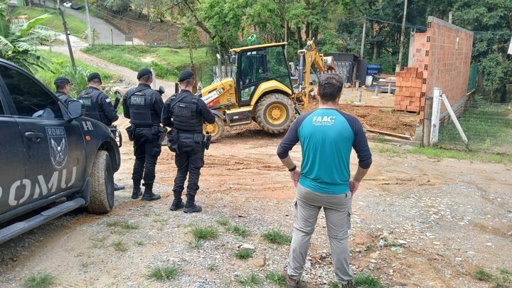
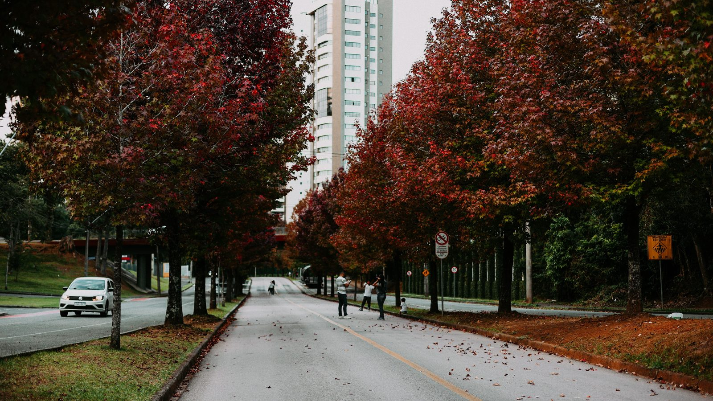
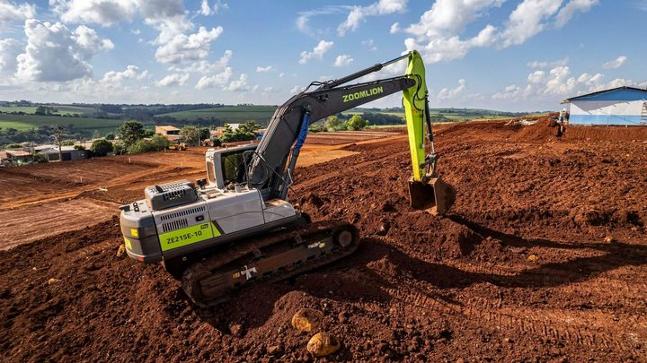
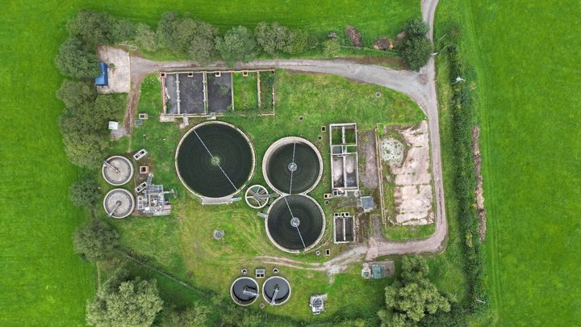

Itapema · Meio AmbienteItapema publica o passo a passo para construir dentro do Refúgio de Vida Silvestre, que cobre metade da cidade
A unidade de conservação que ocupa metade do município, e as regras para quem constrói dentro dela.
Fomos ao Censo 2022 do IBGE e montamos, cidade por cidade, quantos moradores vivem em rua sem nenhuma árvore. Em Itapema são 49.983 de 73.490 pesquisados, ou 68,0%. É a pior marca das três cidades da Costa Esmeralda: Bombinhas tem 66,3% e Porto Belo, 61,2%. Em Santa Catarina são 58,8% e no Brasil, 33,7%. Em Balneário Camboriú, vizinha de parede, são 27,4%. A Lei estadual 20.045, de 29 de julho, criou a Política Estadual de Arborização Urbana, mas ela põe o Estado como agente indutor e deixa o plano municipal como instrumento opcional: não cria obrigação de plantar para Itapema nem para nenhuma outra cidade. As contas são nossas.
Em 30 segundos · Modo de Leitura, formato original Santa Informa
O IBGE contou árvore de rua no Censo de 2022.
Ele olhou a quadra onde cada casa fica.
E anotou quantas árvores tinha ali.
Nós pegamos esse dado por cidade.
Em Itapema, 68,0% moram em rua sem árvore.
São 49.983 pessoas de 73.490 pesquisadas.
Só 8,9% moram em rua com cinco árvores ou mais.
Em Santa Catarina, sem árvore são 58,8%.
No Brasil, 33,7%.
Itapema está 9,2 pontos acima do estado.
Na Costa Esmeralda, é a pior das três.
Bombinhas tem 66,3%.
Porto Belo tem 61,2%.
Balneário Camboriú tem 27,4%.
A diferença para a vizinha é de 40,6 pontos.
Tijucas tem 70,9% e Navegantes, 75,2%.
O dado é de rua, não de morro.
Mata de encosta e quintal não entram na conta.
Metade de Itapema é unidade de conservação.
E a rua da frente continua sem sombra.
Em julho saiu uma lei nova em Santa Catarina.
É a Lei 20.045, de 29 de julho de 2026.
Ela criou a Política Estadual de Arborização Urbana.
O autor é o deputado Marquito.
A lei vale desde o dia da publicação.
Mas o Estado entra como agente indutor.
O plano municipal é instrumento, não dever.
Ou seja, a cidade planta se quiser.
Em junho, Itapema teve uma ação no Várzea.
Foram 250 mudas plantadas.
E cerca de 400 árvores distribuídas.
Não achamos plano de arborização publicado.
Meio AmbientePublicada em Redação Santa Informa

No Censo de 2022 o IBGE fez uma coisa que nenhuma outra pesquisa faz: foi até a quadra de cada casa e contou as árvores da rua. O resultado por município está aberto na tabela 10053 do SIDRA, e nós baixamos os números de Itapema e das cidades em volta para poder comparar. Em Itapema, 49.983 dos 73.490 moradores pesquisados vivem em rua sem nenhuma árvore. São 68,0%. No outro extremo, só 8,9% moram em rua com cinco árvores ou mais. Os percentuais são conta nossa.
Santa Catarina inteira tem 58,8% dos moradores em rua sem árvore, e o Brasil tem 33,7%. Itapema está 9,2 pontos acima do estado e 34,3 pontos acima do país. Dentro da Costa Esmeralda, é a pior das três: Bombinhas marca 66,3% e Porto Belo, 61,2%. A comparação que mais salta é com a vizinha de parede: Balneário Camboriú tem 27,4% de moradores em rua sem árvore, 40,6 pontos abaixo de Itapema, e 34,8% em rua com cinco árvores ou mais. Na volta do mapa, Camboriú tem 54,6%, Tijucas 70,9% e Navegantes 75,2%.
Vale entender o que está sendo medido, porque isso muda a leitura. O IBGE olha a face de quadra onde o domicílio fica, ou seja, a calçada e a rua da frente. Mata de encosta, quintal particular e área de preservação não entram na conta. Itapema tem metade do território dentro de uma unidade de conservação, e mesmo assim sete em cada dez moradores saem de casa numa rua sem sombra. A pesquisa cobriu 73.490 dos 75.940 moradores do Censo, 96,8% da cidade, conta nossa.
Em 29 de julho de 2026 o governador sancionou a Lei 20.045, que institui a Política Estadual de Arborização Urbana. O projeto é do deputado Marquito e tramitou como PL 0039/2025. O texto lista instrumentos úteis, entre eles o espaço árvore, que é o espaço reservado para plantio na calçada, o inventário das árvores existentes e o plano municipal. Mas o artigo 9º define o Estado como agente indutor, e o artigo 7º trata o plano de arborização como instrumento "quando instituído pelos entes competentes". Em português: a cidade planta se quiser. Do lado de cá, a ação mais recente que a Prefeitura divulgou foi em 20 de junho, no bairro Várzea, com 250 mudas frutíferas plantadas e cerca de 400 árvores distribuídas, numa parceria da Conasa Águas de Itapema com a FAACI e entidades do bairro.
O resumo de 30 segundos está no topo e a versão completa é o texto acima. Aqui ficam as três leituras da casa sobre o mesmo assunto.
Clara, a otimista
Tem um lado bom nesse número feio: ele é fácil de melhorar. Árvore de calçada é das intervenções mais baratas que uma prefeitura faz. Não precisa de licitação de obra, não para trânsito por meses e o resultado aparece em poucos anos. A ação do Várzea, em junho, já mostrou que dá para fazer com parceria, sem que a conta caia toda no orçamento.
E a cidade tem o argumento pronto. Itapema vende sombra, verão e caminhada na orla. Rua arborizada baixa a temperatura, segura água de chuva e valoriza imóvel, que aqui é o assunto preferido de todo mundo. Quem planta hoje está mexendo no cartão-postal de 2035.
Seu Prudêncio, o criterioso
Merece atenção a distância para Balneário Camboriú. Quarenta pontos entre cidades coladas, com o mesmo clima e o mesmo tipo de solo, não se explica por natureza: explica-se por escolha de projeto de rua feita ao longo de décadas. Vale acompanhar se o loteamento novo de Itapema está saindo com espaço de plantio na calçada ou se sai com calçada cimentada de muro a muro.
Uma sugestão útil, e barata: publicar o inventário das árvores existentes. É o primeiro instrumento que a lei estadual cita, custa trabalho de campo e planilha, e sem ele qualquer meta de plantio vira promessa sem régua. Some a isso a falta de rubrica separada no Portal da Transparência: não dá para cobrar resultado de um gasto que ninguém consegue ver.
Dito isso, o quadro tem um ponto a favor que não se deve perder de vista. A cidade já tem estrutura ambiental própria, a FAACI, e já demonstrou que consegue mobilizar empresa, associação de bairro e clube de serviço numa ação de plantio. A engrenagem existe. O que falta é plano escrito para ela girar o ano inteiro, e isso está ao alcance.
Caco, o sarcástico
Itapema tem metade do território dentro de refúgio de vida silvestre e sete em cada dez moradores que não veem uma árvore ao sair de casa. É a cidade com mais mata e menos sombra do Brasil, provavelmente.
A lei estadual chegou em julho para resolver. Ela diz que o Estado é agente indutor e que o plano municipal existe quando o município instituir. Ou seja, a lei induz e o município decide. Nesse esquema, a árvore fica esperando alguém tomar a iniciativa.
Mas tudo bem. Enquanto isso a gente caminha na orla, que tem palmeira, e volta para casa pela rua sem nenhuma, no sol das duas da tarde. Tá quente, mas é litoral.
Fontes: os números de moradores por existência de árvores na rua saem da tabela 10053 do SIDRA, do Censo Demográfico 2022 do IBGE, resultado da Pesquisa Urbanística do Entorno dos Domicílios. Consultamos a tabela pela API pública do IBGE em 27 de setembro de 2026, na variável "Moradores em domicílios particulares permanentes ocupados em setores censitários selecionados", com o total de esgotamento sanitário e as categorias de arborização, para Itapema, Porto Belo, Bombinhas, Balneário Camboriú, Camboriú, Tijucas, Navegantes, Santa Catarina e Brasil. Os valores absolutos de Itapema são 49.983 sem árvores, 12.598 com uma ou duas, 4.366 com três ou quatro e 6.543 com cinco ou mais, num total de 73.490. A população de 75.940 moradores em 2022 está na tabela 4709 do mesmo Censo. Todos os percentuais, as diferenças em pontos e a cobertura de 96,8% são conta nossa sobre esses valores. O texto da Lei nº 20.045, de 29 de julho de 2026, que institui a Política Estadual de Arborização Urbana, a autoria do deputado Marquito, a tramitação como PL 0039/2025, a definição de espaço árvore do artigo 2º, o artigo 7º sobre os planos de arborização e o artigo 9º sobre o Estado como agente indutor estão no portal de legislação da Assembleia Legislativa de Santa Catarina, que abrimos e lemos por inteiro. A divulgação dos dados catarinenses pela Assembleia está em Nova lei busca ampliar arborização urbana em Santa Catarina, da Rádio Alesc, de 23 de setembro de 2026. O plantio de 250 mudas e a distribuição de cerca de 400 árvores no bairro Várzea em 20 de junho estão em Itapema promove ação ambiental com plantio de 250 mudas e distribuição gratuita de árvores frutíferas, da Prefeitura de Itapema, de 16 de junho de 2026. A informação de que metade do município está dentro do Refúgio de Vida Silvestre foi publicada por nós em Itapema publica o passo a passo para construir dentro do Refúgio de Vida Silvestre, de 20 de setembro de 2026. A ausência de plano municipal de arborização e de inventário é registro do que procuramos e não encontramos nos sites oficiais nesta data, não afirmação de que não existam.

Itapema · Meio AmbienteA unidade de conservação que ocupa metade do município, e as regras para quem constrói dentro dela.

Itapema · Meio AmbienteA outra regra ambiental que entrou em vigor nesta semana, essa municipal.

Porto Belo · InfraestruturaOutra vez que fomos ao Censo de 2022 medir de onde uma cidade da região está partindo.